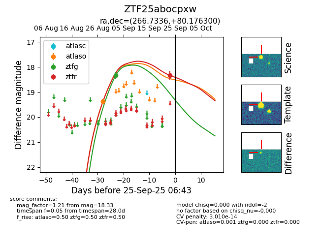
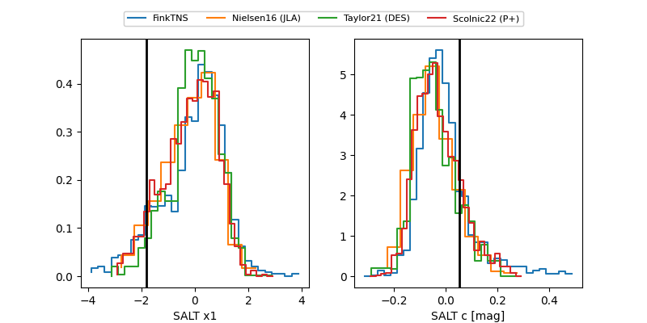

FINK: ZTF25abocpxw
Lasair: ZTF25abocpxw
ALeRCE: ZTF25abocpxw
ZTF25abocpxw (ztf,fink)
equatorial (ra, dec) = (266.7336,+80.17630)
galactic (l, b) = (112.0840,+29.43746)


last atlaso=19.38, ztfg=18.33, ztfr=18.33
1 atlaso, 1 ztfg, 1 ztfr detections